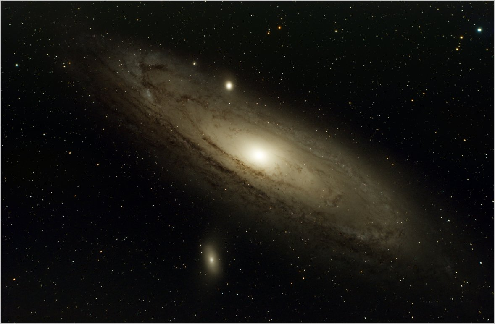

The Andromeda Galaxy is a popular target and I have photographed it several times, I think this latest version is the best so far. The Andromeda Galaxy is very large, quite bright, and famously the most distant object visible to the naked eye at 2.5 million light years. If it were possible to see its full extent in the night sky it would appear about 6x larger than the moon.